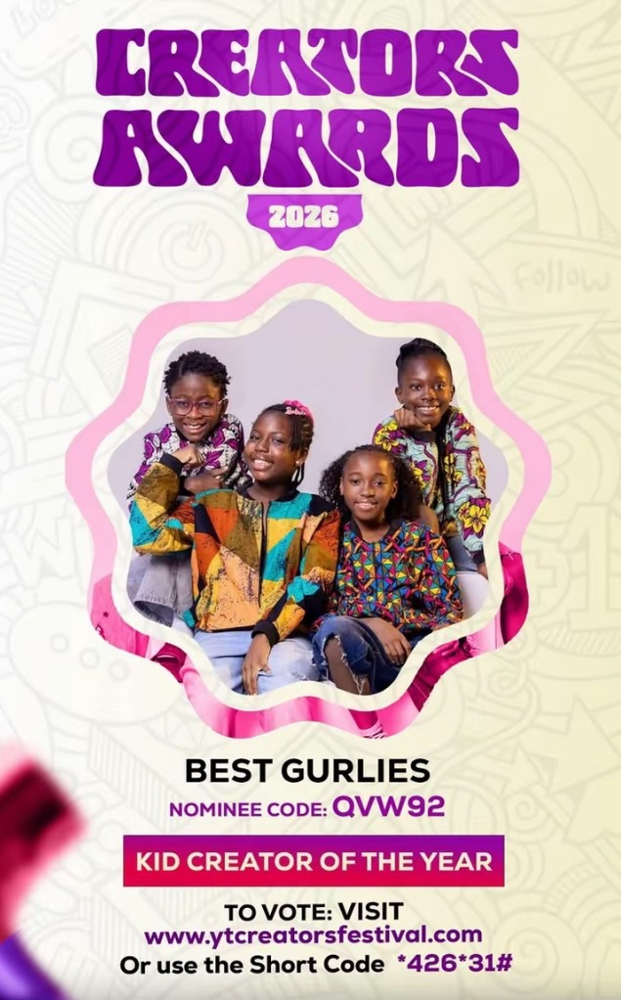
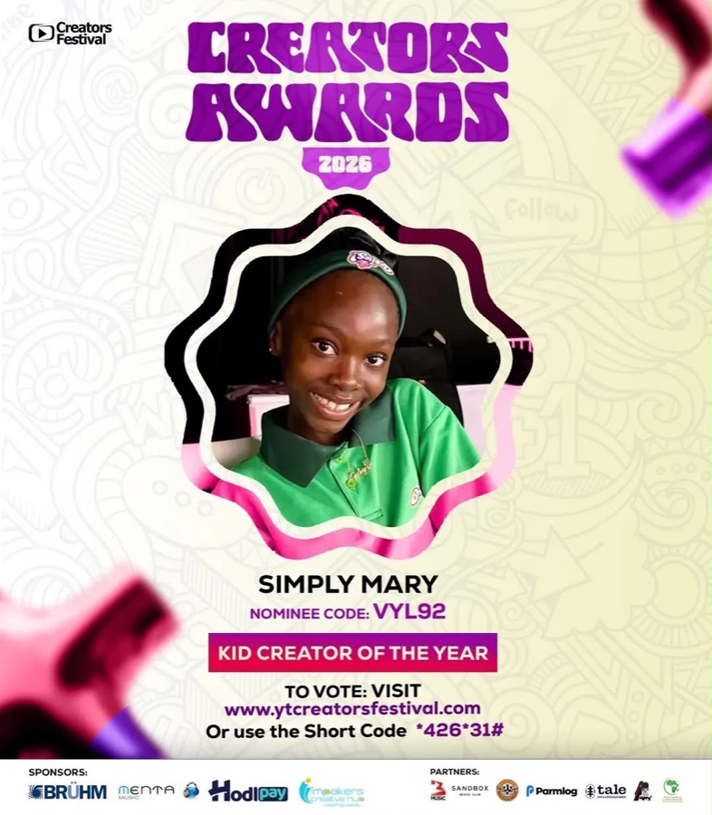
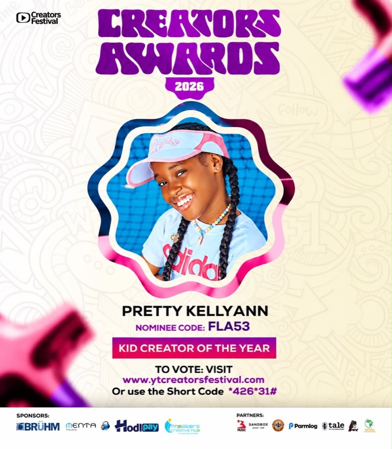

We’re delighted to share that Best Gurlies has been nominated for Kid Creator of the Year at the 6th edition of the Ghana Creators Festival & Awards 2026.
The Ghana Creators Festival & Awards celebrates the creators shaping Ghana’s digital space, and this nomination is a proud moment for our girls and for the whole Besties community.
The nominees
Alongside Best Gurlies, Simply Mary and Pretty Kellyann are also nominated for Kid Creator of the Year. Congratulations to all three!



Thank you to everyone who has supported Besties along the way. We’ll keep you posted on everything to come from the festival.
Want first word on Besties news? Join our WhatsApp Channel.